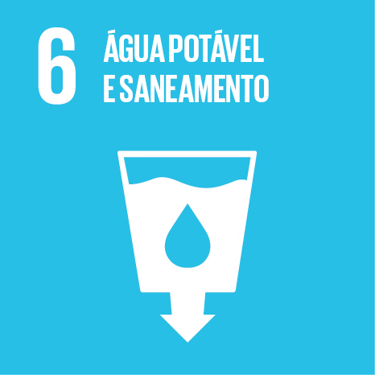
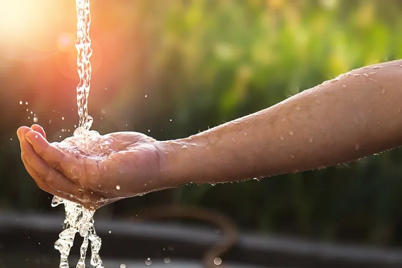
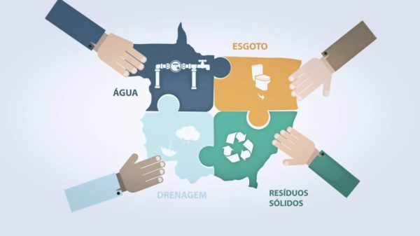
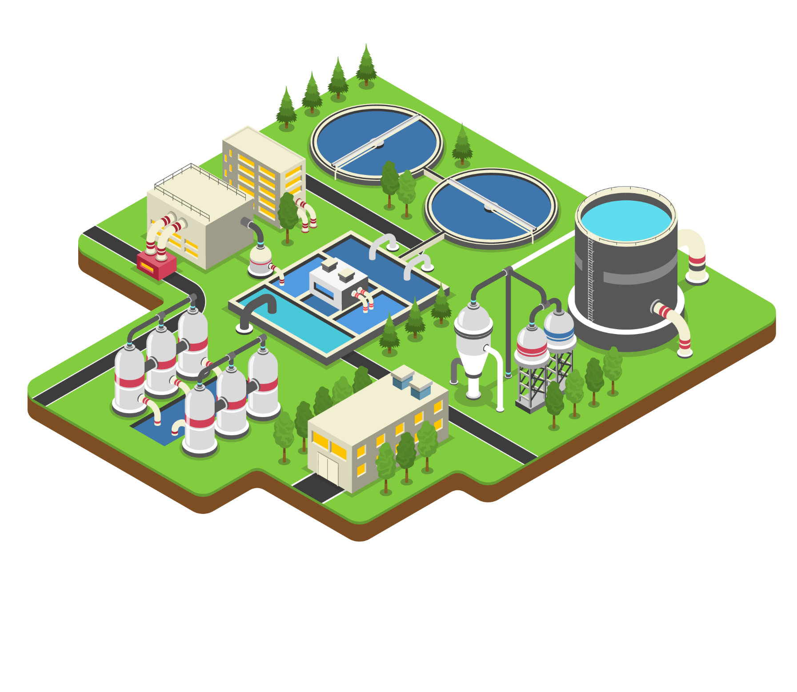
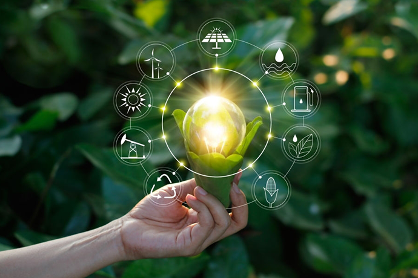

O Ciclo da Água
O ciclo da água é um processo natural que envolve a evaporação da água dos oceanos, rios e lagos, formando nuvens que eventualmente se precipitam na forma de chuva ou neve. Essa água retorna à superfície terrestre, recarregando os aquíferos subterrâneos e alimentando os corpos d'água. O ciclo da água é vital para manter o abastecimento de água potável, mas as atividades humanas, como a poluição e a extração excessiva de água, podem comprometer esse equilíbrio natural.A Importância da Água Potável para a Saúde
O acesso à água potável segura é fundamental para prevenir doenças transmitidas pela água, como cólera, diarréia, hepatite A e febre tifoide. Populações que consomem água contaminada estão sujeitas a uma série de problemas de saúde, incluindo desnutrição e incapacidade de realizar atividades diárias. Garantir o acesso universal à água potável de qualidade é essencial para melhorar a saúde e o desenvolvimento humano.

Saneamento Básico e Impacto no Meio Ambiente
O saneamento básico adequado é essencial para proteger a saúde pública e o meio ambiente. O tratamento de águas residuais reduz a contaminação dos corpos d'água, evitando a propagação de doenças e a degradação ambiental. Além disso, o manejo adequado de resíduos sólidos, como o lixo doméstico e industrial, minimiza a poluição do ar, do solo e da água, contribuindo para a preservação dos ecossistemas.

Acesso à Água Potável ao Redor do Mundo
Apesar dos avanços nas últimas décadas, milhões de pessoas em todo o mundo ainda enfrentam dificuldades para acessar água potável e saneamento básico adequado. As comunidades mais afetadas são geralmente aquelas em áreas rurais ou urbanas pobres, onde os sistemas de água e esgoto são precários ou inexistentes. Iniciativas como a construção de poços, sistemas de tratamento de água e campanhas de educação sanitária são essenciais para melhorar o acesso à água potável e ao saneamento básico nessas regiões.
Tecnologias e Inovações em Saneamento Básico
Nos últimos anos, têm surgido diversas tecnologias inovadoras para melhorar o tratamento de água e o saneamento básico em todo o mundo. Isso inclui sistemas de filtragem avançados, biofiltros, banheiros secos e soluções descentralizadas de tratamento de águas residuais. Muitas dessas tecnologias são acessíveis e de baixo custo, tornando-as ideais para implementação em comunidades carentes ou áreas rurais remotas.

Desafios Futuros e Soluções Sustentáveis
À medida que a demanda por água potável continua a aumentar devido ao crescimento populacional e às mudanças climáticas, é crucial adotar soluções sustentáveis para garantir o acesso universal à água potável e ao saneamento básico. Isso inclui a promoção da eficiência no uso da água, a conservação de recursos hídricos, o investimento em infraestrutura resiliente e a educação pública sobre práticas de higiene e saneamento. A colaboração entre governos, organizações não governamentais e setor privado é fundamental para enfrentar os desafios futuros e criar um futuro mais sustentável e saudável para todos.
